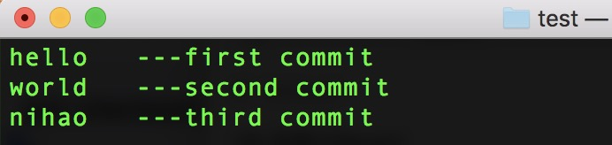
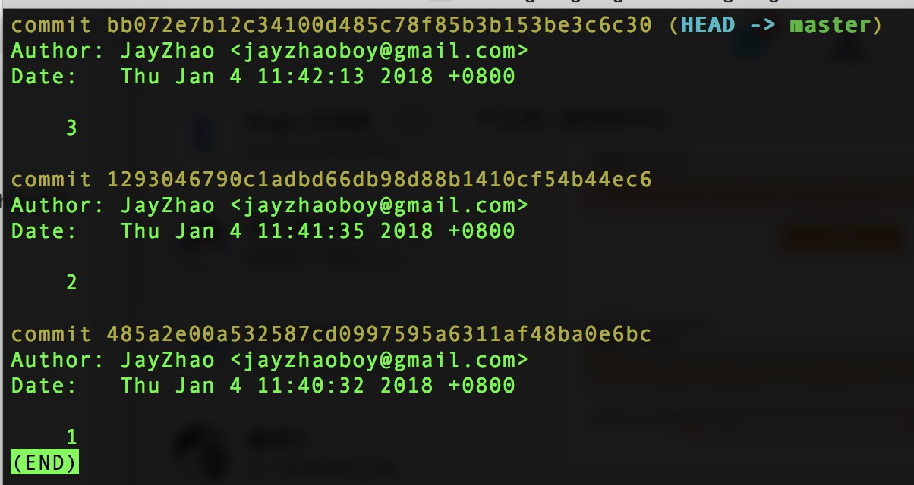
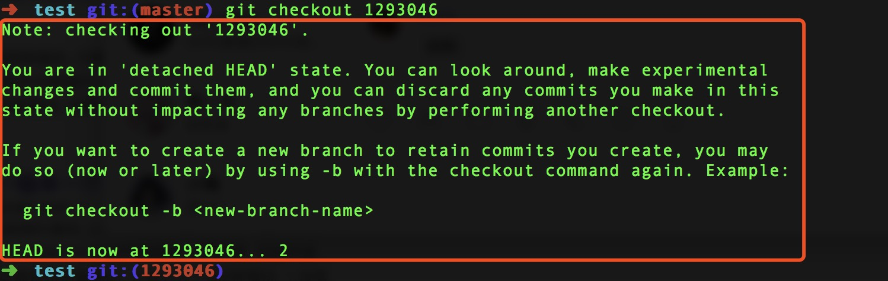
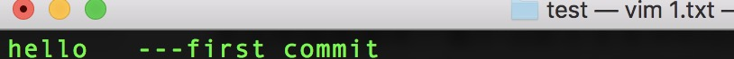

用了这么久的Git，日常使用的就是add,commit,reset,checkout,pull,push等，代码回滚主要有三个重要的命令reset checkout revert
但revert使用的场景非常之少，所以总容易遗忘，而且每次去搜别人的解释总要花时间理解一下，所以在此记录一下自己的实践过程，方便以后忘记查阅。在这里只着重理解revert和checkout在提交层面的特点。
若对git其他命令不甚详解可先阅读：
代码回滚：Reset、Checkout、Revert-的选择
Git官方文档
先来个简单的例子

就是一个txt文件的三次提交内容

这是 git log，十分简单。
checkout（简单，也没啥好说的）
提交层面主要就两个功能
- 1.切换分支，还可以与-b（新建）-merge（合并）
1 | checkout <-b，-merge等> <branchName> |
- 2.查看就版本代码
1 | git checkout <HEAD> |
这样你就可以切换到指定分支的代码了，所以还是要记住在此之前提交已修改的代码。其实这个操作要我说切换版本和切换分支的原理是一样的，不信你看:

其实git已经把啥都告诉你了框选的意思大概就是说
你处于“脱离
HEAD”状态。你可在这里写修改测试并提交，你也可以放弃你的提交通过执行另一个分支而不影响其他分支。如果你想创建一个新的分支来保留你创建的提交，你可以再次使用-b和checkout命令。
并且终端里面用于展示当前分支名字的位置都变成了HEAD的值，所以我说和切换分支很类似，但类似毕竟是类似，还是不一样的，上面说了你可以在check后的HEAD状态下，修改测试甚至提交。但记住你处于“脱离HEAD”状态，啥意思呢，通俗理解就是你处在一个独立的状态，当你切回其他分支的时候你所做的全部修改都会不见了。所以若想保存提交可通过建立新分支～
revert
这个命令前面一直理解的模糊，当然我估计很多人用了这么久git也没遇到需要使用revert的场景。
Revert 撤销一个提交的同时会创建一个新的提交。
可结合前面链接中的配图理解。
当时总把revert和checkout混淆了，认为就在当前分支进行的类似checkout操作，在实践之后发现事实情况是这个样子的：
通常情况下（没有冲突），假如当前我们在master分支，当我们运行以下代码的时候：
1 | git revert <HEAD> |
比如我们运行revert回到第二次提交也就是：
1 | git revert 129304 |
效果应该是第二次提交被撤销并不是回到第二次提交，其实是相当于回到第一次提交的状态~~
1.txt内容会变成:

这是当时我比较容易记混的点，不仅如此假如此时我们的git log的话应该会有四条内容。
不过通常情况下会出现冲突或者报错又或者我们不想直接提交这些都可以通过一种方法来解决，假如你想revert的版本不是很考前的话哈哈：
1 | git revert --no-commit HEAD |
--no-commit就是不立即提交的意思，而且这种‘笨’方法能解决一种很奇怪的报错，但这次的例子中没有遇到。最后可以通过1
git revert --continue
或者添加了其他修改然后通过add commit 完成一次新的提交，提交的HEAD位于当前分支的最末尾位置。
以上就是revert的特点了。